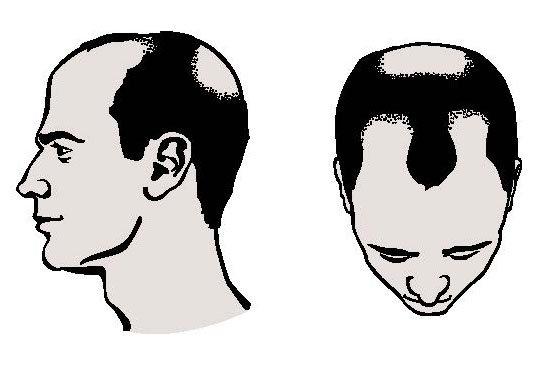

कम उम्र में सिर के बाल उडऩा बहुत टेंशन देने वाली प्रॉब्लम है वर्तमान समय ये समस्या युवाओं में बहुत तेजी से बढ़ रही है। इसका मुख्य कारण हेरीडिटी, हार्मोनल कारण या खानपान व दिनचर्या के साथ ही धूप में रहने से व पोषक तत्वों की कमी से भी बाल सफेद होते हैं लेकिन बालों की ठीक से देखभाल न करना भी बाल झडऩे का एक बड़ा कारण है। ये एक ऐसी समस्या है जिससे उम्र बहुत अधिक दिखने लगती है। इसे दूर करने के लिए अधिकतर लोग कई तरह के तैल व शैंपू का उपयोग करते हैं। लेकिन तेल व शैंपू बालों को स्वस्थ नहीं बना सकते हैं। अगर आप समय से पहले गंजे नहीं होना चाहते तो नीचे लिखे उपाय अपनाएं।
- अगर आपको बार-बार कंघी करने की आदत है तो संभल जाइए। अधिकतर लोग अपने बालों को सुलझा और संवरा दिखाने के लिए बालों को बार-बार कंघी करते हैं। लेकिन बहुत कम लोग ये जानते हैं कि बार-बार बालों को कंघी करने से बाल डेमेज होते हैं।कंघी करना भी एक बहुत कम अंतराल पर बालों में कंघी न करें इससे बाल ज्यादा तैलीय हो जाते हैं।
- बार-बार बालों को धोने से भी बालों को नुकसान पहुंचता है। अधिकांश लोग अपने बालों को सुंदर व सेहतमंद दिखाने के लिए बार-बार और ज्यादा केमिकल्स वाले शैम्पू का यूज करते हैं बल्कि बालों को धोने के लिए आंवला व अरीठा पाउडर का यूज सबसे अच्छा रहता है। इसके अलावा अगर बालों को धोने के लिए कम केमिकलस वाले शैम्पू का यूज करें।आपके बाल तैलीय हैं तो कंडीशनर का इस्तेमाल न करें।
- कम से कम सप्ताह में एक दिन शंखपुष्पी से बना हुआ असली और शुद्ध चूर्ण थोड़े से पानी में मिलाकर बालों की जड़ों में लगाएं। इसके अलावा भृंगराज के चूर्ण में थोड़ा तिल मिलाकर खाएं। इस आयुर्वेदिक ट्रिटमेंट से आपके बाल प्राकृतिक रूप से स्वस्थ एवं मजबूत बनेंगे। प्रोटीन से भरपूर चीजों का सेवन अधिक करें इससे हेयर फॉलिकल्स मजबूत होते हैं।
- शैम्पू करने से पहले बालों को ड्राय रखने से भी बाल झडऩे लगते हैं इसीलिए शैम्पू करने से पहले बालों में हल्के गर्म ऑलिव ऑयल या कोकोनट ऑयल से मसाज करें। बालों की जड़ों में तेल की अच्छे से मसाज रात को सोने पहले ही कर लेना चाहिए। इससे न सिर्फ बालों की जड़े मजबूत होती है बल्कि बालों शाइन भी करने लगती है।
- बालों का सीधा संबंध पेट से होता है। यदि पाचन तंत्र और हाजमा ठीक नहीं है तो बालों की जड़ें कमजोर होंगी लगातार कब्ज रहने से हेयर फालिकल्स कमजोर हो जाते है बाल टूटने व झडऩे लगते हैं। इसलिए अपने खान-पान और हाजमे को हमेशा ठीक रखें।चाय, कॉफी, पान-तंबाकू, मिर्च-मसाले आदि नशीले पदार्थों से दूर ही रहें।